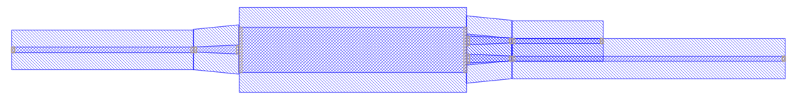

Module gpdk.routing.extended.extended
Expand source code
from dataclasses import dataclass
from numbers import Number
from typing import List, Mapping, Optional, Tuple
from fnpcell import all as fp
from gpdk.components.straight.straight import Straight
from gpdk.routing.auto_transitioned.auto_transitioned import AutoTransitioned
from gpdk.technology import get_technology
@fp.pcell_class()
@dataclass(eq=False)
class Extended(fp.PCell):
"""
Attributes:
device: device whose ports need to be extended
lengths: dict with port name as key, length as value, "*" means every other port
waveguide_type: type of generated waveguide
Examples:
```python
TECH = get_technology()
device = Extended(device=Mmi(waveguide_type=TECH.WG.FWG.C.WIRE), lengths={"*": 10, "op_0": 20, "op_1": 30})
fp.plot(device)
```

"""
device: fp.IDevice = fp.DeviceParam().as_field()
lengths: Mapping[str, float] = fp.MappingParam(K=str, V=Number, immutable=True).as_field()
waveguide_type: Optional[fp.IWaveguideType] = fp.WaveguideTypeParam(required=False).as_field()
def build(self) -> Tuple[fp.InstanceSet, fp.ElementSet, fp.PortSet]:
insts, elems, ports = super().build()
device = self.device
lengths = self.lengths
waveguide_type = self.waveguide_type
instance = device if waveguide_type is None else AutoTransitioned(device=device, waveguide_types={key: waveguide_type for key in lengths})
joints: List[Tuple[fp.IOwnedTerminal, fp.IOwnedTerminal]] = []
straight_ports: List[fp.IOwnedTerminal] = []
for port in instance.ports:
if isinstance(port, fp.IOwnedPort) and not port.disabled:
assert port.name
length = lengths.get(port.name) or lengths.get("*")
if length is not None:
if waveguide_type is not None:
length -= fp.distance_between(device[port.name].position, instance[port.name].position)
assert length > 0 or fp.is_zero(length), f"extend length of {port.name} is too short"
if length > 0:
s = Straight(length=length, waveguide_type=port.waveguide_type)
joints.append(port <= s["op_0"])
port_name = port.name
straight_ports.append(s["op_1"].with_name(fp.Hidden(port_name) if port.hidden else port_name))
used_port_names = set(port.name for port in straight_ports)
unused_ports = [port for port in instance.ports if port.name not in used_port_names]
connected = fp.Connected(
joints=joints,
ports=straight_ports + unused_ports,
)
insts += connected
ports += connected.ports
return insts, elems, ports
if __name__ == "__main__":
from pathlib import Path
gds_file = Path(__file__).parent / "local" / Path(__file__).with_suffix(".gds").name
library = fp.Library()
TECH = get_technology()
# =============================================================
# fmt: off
from gpdk.components.mmi.mmi import Mmi
from gpdk.components.ring_resonator.ring_resonator import RingResonator
library += Extended(device=Mmi(waveguide_type=TECH.WG.FWG.C.WIRE), lengths={"*": 10, "op_0": 20, "op_1": 30})
library += Extended(device=RingResonator(ring_radius=10, bottom_spacing=0.1, top_spacing=0.1, ring_type=TECH.WG.FWG.C.WIRE, bottom_type=TECH.WG.FWG.C.WIRE, top_type=TECH.WG.FWG.C.WIRE), lengths={"op_0": 1, "op_1": 1, "op_2": 1, "op_3": 1})
# fmt: on
# =============================================================
fp.export_gds(library, file=gds_file)
# fp.plot(library)Classes
class Extended (name: str = None, bands: Optional[FrozenSet[fnpcell.interfaces.IBand]] = None, patches: Tuple[fnpcell.interfaces.IElement, ...] = (), port_names: Sequence[Union[None, str, fnpcell.interfaces.Hidden]] = (), transform: fnpcell.transform.Affine2D = None, device: fnpcell.interfaces.ICellRef = None, lengths: Mapping[str, float] = None, waveguide_type: Optional[fnpcell.interfaces.IWaveguideType] = None)-
Attributes
device- device whose ports need to be extended
lengths- dict with port name as key, length as value, "*" means every other port
waveguide_type- type of generated waveguide
Examples:
TECH = get_technology() device = Extended(device=Mmi(waveguide_type=TECH.WG.FWG.C.WIRE), lengths={"*": 10, "op_0": 20, "op_1": 30}) fp.plot(device)
Expand source code
class Extended(fp.PCell): """ Attributes: device: device whose ports need to be extended lengths: dict with port name as key, length as value, "*" means every other port waveguide_type: type of generated waveguide Examples: ```python TECH = get_technology() device = Extended(device=Mmi(waveguide_type=TECH.WG.FWG.C.WIRE), lengths={"*": 10, "op_0": 20, "op_1": 30}) fp.plot(device) ```  """ device: fp.IDevice = fp.DeviceParam().as_field() lengths: Mapping[str, float] = fp.MappingParam(K=str, V=Number, immutable=True).as_field() waveguide_type: Optional[fp.IWaveguideType] = fp.WaveguideTypeParam(required=False).as_field() def build(self) -> Tuple[fp.InstanceSet, fp.ElementSet, fp.PortSet]: insts, elems, ports = super().build() device = self.device lengths = self.lengths waveguide_type = self.waveguide_type instance = device if waveguide_type is None else AutoTransitioned(device=device, waveguide_types={key: waveguide_type for key in lengths}) joints: List[Tuple[fp.IOwnedTerminal, fp.IOwnedTerminal]] = [] straight_ports: List[fp.IOwnedTerminal] = [] for port in instance.ports: if isinstance(port, fp.IOwnedPort) and not port.disabled: assert port.name length = lengths.get(port.name) or lengths.get("*") if length is not None: if waveguide_type is not None: length -= fp.distance_between(device[port.name].position, instance[port.name].position) assert length > 0 or fp.is_zero(length), f"extend length of {port.name} is too short" if length > 0: s = Straight(length=length, waveguide_type=port.waveguide_type) joints.append(port <= s["op_0"]) port_name = port.name straight_ports.append(s["op_1"].with_name(fp.Hidden(port_name) if port.hidden else port_name)) used_port_names = set(port.name for port in straight_ports) unused_ports = [port for port in instance.ports if port.name not in used_port_names] connected = fp.Connected( joints=joints, ports=straight_ports + unused_ports, ) insts += connected ports += connected.ports return insts, elems, portsAncestors
- fnpcell.pdk.pcell.PCell
- fnpcell.cell.cell_ref.CellRef
- fnpcell.mixin.transform_mixin.TransformMixin
- fnpcell.interfaces.ICellRef
- fnpcell.interfaces.IUpdatable
- fnpcell.interfaces.IElement
- fnpcell.interfaces.IRunnable
- fnpcell.interfaces.IAffineTransformable
Class variables
var device : fnpcell.interfaces.ICellRefvar lengths : Mapping[str, float]var waveguide_type : Optional[fnpcell.interfaces.IWaveguideType]
Methods
def build(self) ‑> Tuple[fnpcell.pdk.collection.InstanceSet, fnpcell.pdk.collection.ElementSet, fnpcell.pdk.collection.PortSet]-
Abstract method must be implemented to build a pcell.
Expand source code
def build(self) -> Tuple[fp.InstanceSet, fp.ElementSet, fp.PortSet]: insts, elems, ports = super().build() device = self.device lengths = self.lengths waveguide_type = self.waveguide_type instance = device if waveguide_type is None else AutoTransitioned(device=device, waveguide_types={key: waveguide_type for key in lengths}) joints: List[Tuple[fp.IOwnedTerminal, fp.IOwnedTerminal]] = [] straight_ports: List[fp.IOwnedTerminal] = [] for port in instance.ports: if isinstance(port, fp.IOwnedPort) and not port.disabled: assert port.name length = lengths.get(port.name) or lengths.get("*") if length is not None: if waveguide_type is not None: length -= fp.distance_between(device[port.name].position, instance[port.name].position) assert length > 0 or fp.is_zero(length), f"extend length of {port.name} is too short" if length > 0: s = Straight(length=length, waveguide_type=port.waveguide_type) joints.append(port <= s["op_0"]) port_name = port.name straight_ports.append(s["op_1"].with_name(fp.Hidden(port_name) if port.hidden else port_name)) used_port_names = set(port.name for port in straight_ports) unused_ports = [port for port in instance.ports if port.name not in used_port_names] connected = fp.Connected( joints=joints, ports=straight_ports + unused_ports, ) insts += connected ports += connected.ports return insts, elems, ports